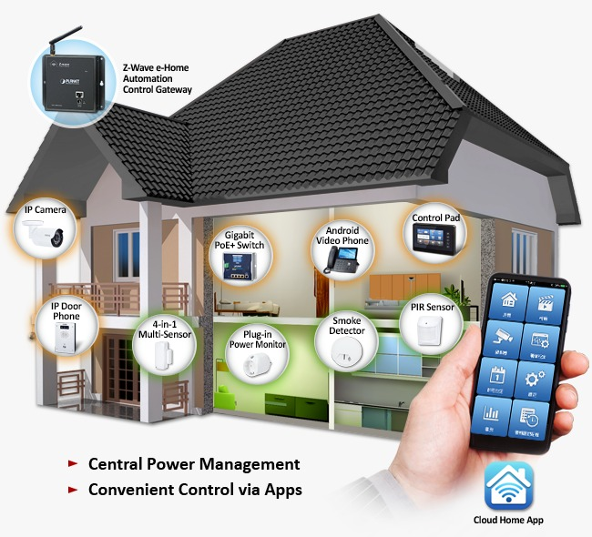
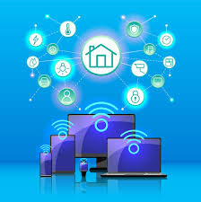

What is a connectivity of a smart home ?
Definition :
The backbone of the smart home, ensuring seamless and reliable communication between devices, systems, and users through high-speed internet access and wireless protocols.
Benifits :
Enables effortless control of smart devices, remote access to home systems, and integration of various technologies for a unified and convenient user experience.
Discription :
Structured wiring with Ethernet cables for high-bandwidth devices ensuring reliable and low-latency connectivity.
Application :
Pre-wired for surround sound or multi-room audio systems, ensuring optimal sound quality and flexibility for future upgrades.

Pros & Cons
Pros :
- Reliability: Wired systems are typically more stable and reliable since they aren't subject to interference like wireless systems.
- Speed: They offer faster data transfer and response times, making them ideal for high-performance automation tasks.
- Security: Wired systems are less susceptible to hacking or interference, providing greater security.
- Power: Devices connected via wired systems usually don't require batteries, which can save on maintenance.
Cons :
- Cost: Installation can be expensive, especially in retrofitting existing homes, due to wiring and labor costs.
- Inflexibility: Once installed, it's challenging to reconfigure or expand a wired system without significant effort.
- Aesthetics: Wires may need to be hidden, requiring more invasive modifications to walls and ceilings.
- Installation Time: Wired systems take longer to install compared to wireless systems.
The most frequently used technology in the wired home automation system is KNX, DALI, BACnet, and Modbus TCP/IP.
A wired automation system offers extreme convenience. Nowadays, it comes with so much developed technology. They are extremely popular as they are reliable to almost all sizes and types of homes, as we recommend using KNX protocol.
What is KNX ?
KNX is an open-source standard available at the global level. This ensures that all components and functions of a building automation system are able to communicate clearly, instantaneously, and remotely.
The KNX protocol has become an international standard adopted by many device manufacturers in the smart home automation and BMS sectors and establish a new functional standard compatible with several manufacturers in the home automation sector.
Wi-Fi network :
A truly connected smart home requires a robust technological infrastructure that enables the customer experience and seamlessly integrates the elements to all areas of the villa.
A strategically placed mesh network system to provide seamless Wi-Fi coverage throughout the villa, including outdoor areas.
Smart switches :
- Turn lights on/off from anywhere using an app or voice commands.
- Create schedules to automatically turn lights on/off at specific times or based on sunrise/sunset.
- Create customized lighting scenes (e.g., "Movie Night," "Dinner Party") to set the perfect ambiance with a single command.
- Pushbutton or Touch switches to control lighting including with the ability to dim and adjust based on automated scenes. Ample outlets and wireless charging stations to ensure devices are always connected.
Touch panel :
Touch panel is a central panel that can control every feature in villa from one place. Usually it is located in central location in each floor (i.e., living areas).
Touch panel/tablet that can control lighting and air conditioning automation, curtain and blinds control, camera-security systems, Alarm control, Thermostat, Traffic map, weather forecasts, CCTV, Different frame options and many more special features with one touch.
Room controllers :
Room controller are like a mini-master touch panels that can control many features within the room from one dedicated location.
Remote acsses :
A secure VPN solution or cloud-based platform to allow homeowners to monitor and control their smart villa remotely from their smartphones or tablets.

Alexa, Google Assisst, Siri, Cortana :
Smart TVs, streaming devices, and audio systems can be integrated into a broader smart home ecosystem. They can connect to voice-activated assistants like Amazon Echo or Google Home, enabling you to control your entertainment setup through voice commands.